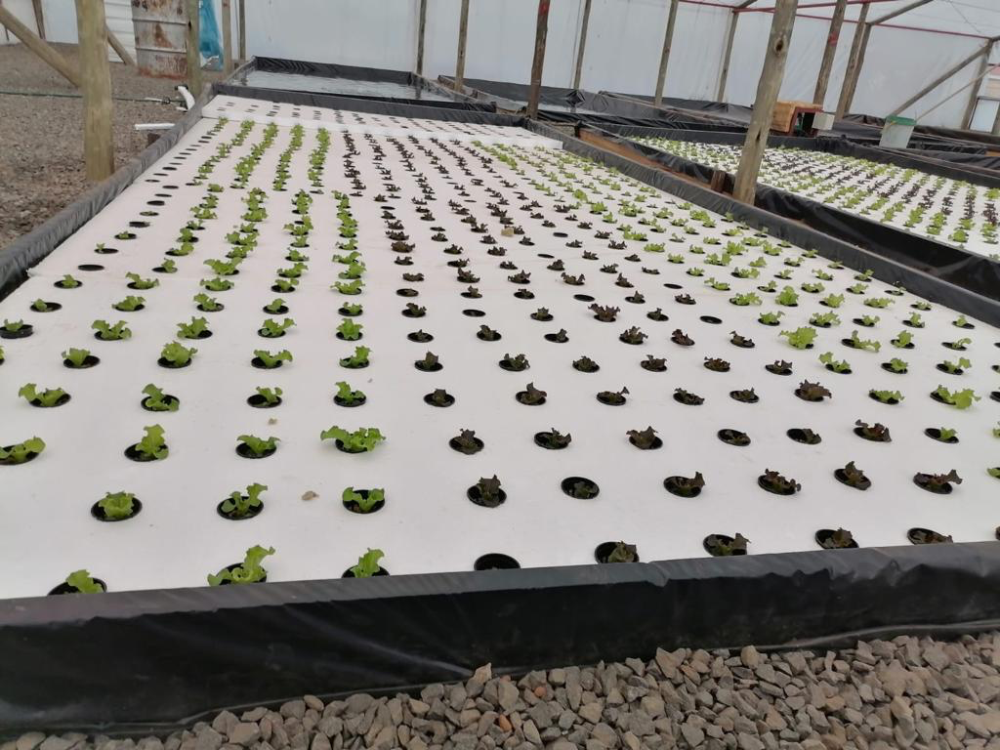
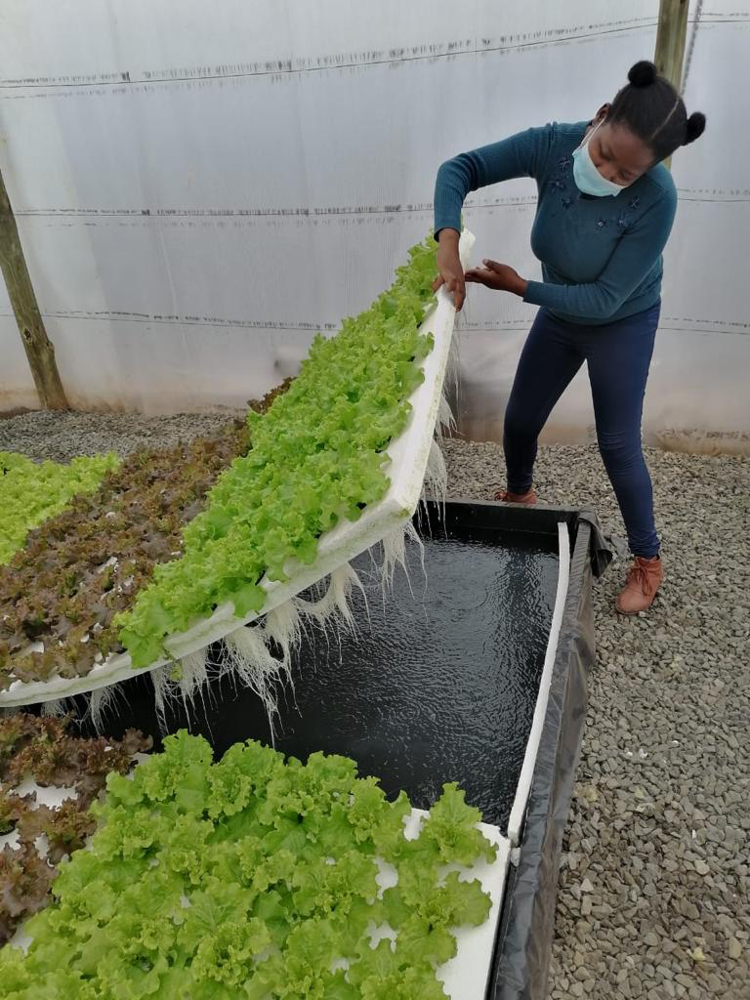
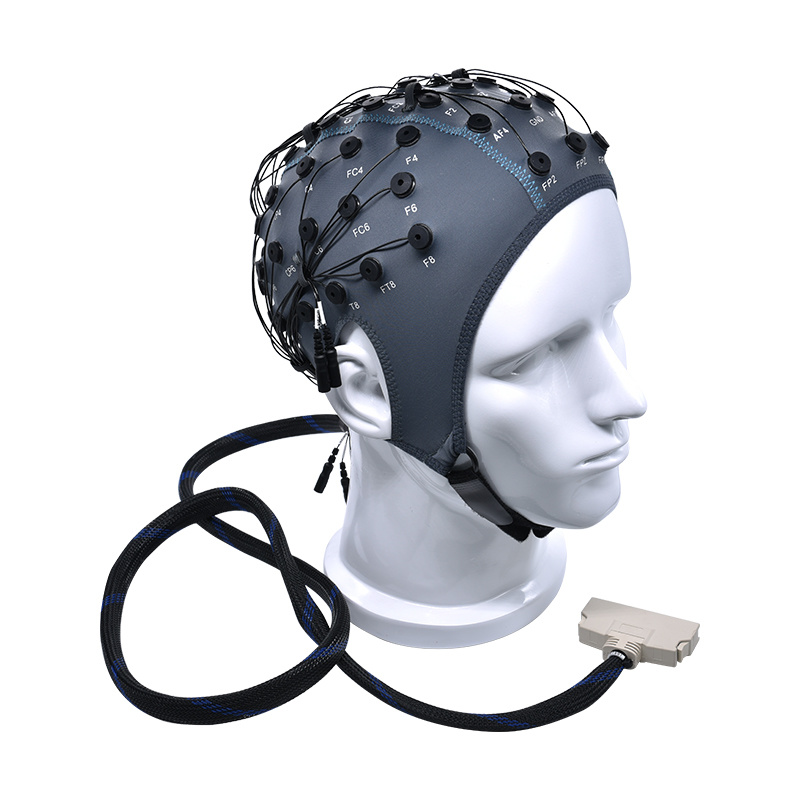

### Project #1
My friend has a hydroponics system for his farm in Lesotho. He handed me over the task of building a machine that can detect when temperature is too low, trigger a water heating mechanism that brings the temperature of water to a certain precise level. The ideal temperature should be between 21-23 degrees Celsius (69.8-73.4 degrees F) It can use either solar or electricity and preferably uses materials that are locally available in Lesotho with as minimal of imported pieces as possible.
Here below are pictures of the current structure of the hydroponic system:


The dimensions of the pond are as follow: 6 meters long and 2.4 meters wide. It is about 16 cm deep.
For the execution of this project, I intend to refer to the pool heating system mechanism and incorporate some of the same techniques to build this machine prototype.
<!--  -->
### Project #2
This is more of a silly idea that I had one day daydreaming in class instead of following my lecture. A shower cap that actually washes your hair.
Build in the form of a EEG cap. It would have several different pipes serving 4 major purposes:
* Water dispenser
* Soap/shampoo dispenser
* Evacuation pipe
* Blow dryer
Activation of the shower cap process:
Step 1: Activate water then water flows and wets the hair. The pipe should be placed near the forehead to take advantage of the gravity to facilitate the water flow and ensure that the whole head will be watered down.
Step 2: Activate soap/shampoo/shampoo and soap/shampoo will flow from the soap/shampoo pipe and get mixed w the wet hair
Step 3 (will be made optional for the sake of complexity): Ideally get small hairs attached to the cap that will get elongated and will start moving and act like a hair scrub washing the hair up to the scalp.
Step 4: Activate water or clean again, but this time it will automatically activate the evacuation pipe which is just a few pipes that will open up letting the water that is flowing through the water pipe escape through that evacuation pipe. The pipe should be placed near the back neck to effectively collect the water that is flowing. This is process should take a long time to ensure that the hair is well cleaned and all the soap/shampoo is removed
Step 5: Activate the blow dryer. Or not. The pipes who will have this function should be placed in as many places as possible to ensure that every small part of the head is being reached.
This is what I envision the cap to look like. A more elaborate design of the cap with all the different functions of the pipes illustrated will be provided soon, but just as a reference, here is an image of an EEG cap:
